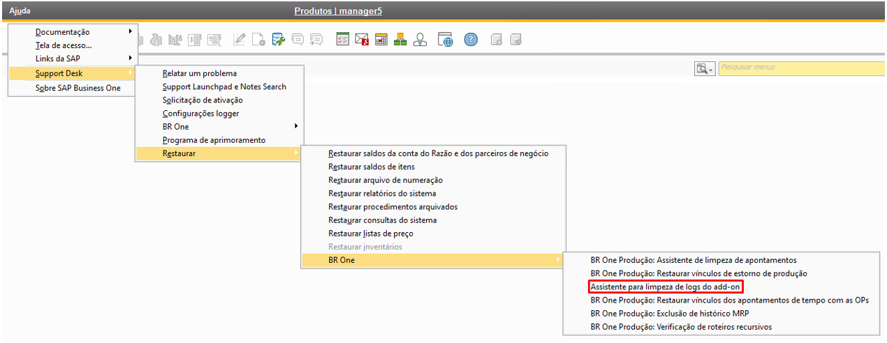
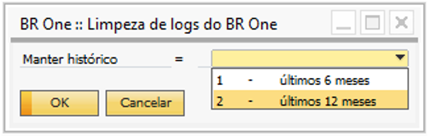
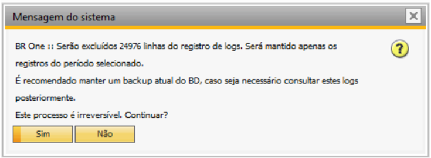

Assistente para limpeza de logs do add-on
Para acessar a funcionalidade ‘Assistente para limpeza de logs do add-on’ é necessário ir no menu:
Ajuda -> Support Desk -> Restaurar -> BR One -> Assistente para limpeza de logs do add-on
{kind=link}
Ela tem como objetivo excluir os registros de log existentes na tabela ‘@UPP_TRCE’, para realizar a exclusão dos dados o usuário deve informar um intervalo de histórico no qual deve ser mantido. Ao clicar na funcionalidade será aberta a tela abaixo, onde o usuário poderá definir o histórico que deseja manter.
{kind=link}
Antes de realizar a exclusão dos registros o addon irá exibir uma mensagem de confirmação conforme abaixo, ao clicar em ‘Sim’ os registros serão excluídos, ao clicar em ‘Não’ o processo será cancelado.
{kind=link}
Caso o usuário execute a funcionalidade e não exista registros gravados na tabela ‘@UPP_TRCE’, o addon irá retornar uma mensagem no rodapé, informando que não foram encontrados registros.
{kind=link}
BR One :: Não foram encontrados registros para serem excluídos.
Obs.: A execução desse parâmetro deve SEMPRE acontecer com a orientação do Suporte.